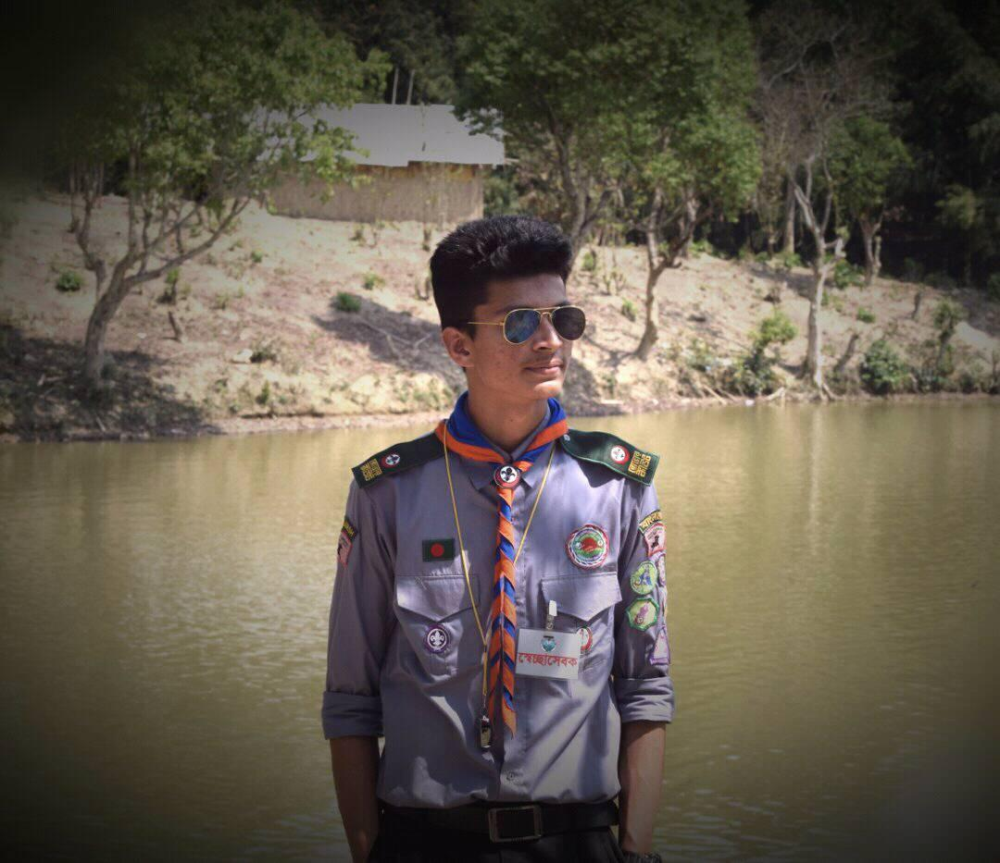

Technology & The Story of We
From the very biggining of the world human life changes in every step. From then to now we know how to solve anykind of problem. We discovered a lot of new things & everyday we are discovering new things. If we think what helps us to discover we all will get the answer its “Technology”. Yes, i am talking about our 21st centurys esential element technology.
From the time of thales to the time of todays we have made so much changes by our creativity & work. From the discovery of electric bulb to todays electric bulbs there are so many changes made by us. We are developing day by day and in this development technology is the main weapon. When someone walks through the road he might see all the very big buildings with great technology he will say wow thats amazing, but if an engineer walks through the path he will say I can do better than this.
Nowadays technology is everywhere. People using technologys like mobile, laptop, a mixer grinder, a pressure cooker, a car or an aroplane. Tech has its touch everywhere. We have many websites which contains a lot of blogs, articles on technology. Peoples has lost there attraction from the text writings because there are lots of videos & graphics has taken a known place to everyones mind & heart. Technology has made this graphics & videos interesting so that people can understand easily.
A story of father & his child can be interesting. A father has his qualities but his son will contain all of his fathers quality as well as his own qualities. Technology is like that. If a person who knows good he interacts with another person then the other person gets the good & in result he can make the thing best. We all have to share our goods to make our technology the best.